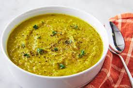

A delicious digital rendering of the pie in questionBro-Chef Kitchen
There's something about winter that just begs for the making of split pea soup, wouldn't you agree?
Like the proverbial groundhog, who failing to see his shadow, retreats into the comfort of his burrow, in the chilly, foggy dampness of what is Sacramento winter, I stick my head out the door, only to make a quick retreat back into the house, wanting nothing more than to make a big pot of this hearty soup.
Made with dried "split" peas, and cooked up with flavorful, smoky ham hocks, split pea soup is warm, satisfying, and great for leftovers.
Recipe
10 Minutes110 Minutes120 Minutes
NOTE: For the Herb Bouquet: Tie 3 cloves garlic, 4 allspice berries, 2 bay leaves, 1 teaspoon thyme, 8 sprigs parsley in rinsed cheesecloth or place in bouquet garni muslin bag.
This recipe yields about 6 servings
Ingredients
1 pound (2 1/4 cups) green split peas
2 tablespoons extra virgin olive oil
1 large onion, peeled and chopped
2 ribs celery, chopped
1 large leek, chopped
1 large carrot, chopped
1 large clove garlic, halved
2 ham hocks, well rinsed
Herb bouquet (see above)
Salt
Freshly ground black pepper
Small toasted croutons, for garnish
Chopped parsley or chives, for garnish
Method
Pick over the peas and remove any stones. Rinse and drain the peas.
Sauté the vegetables:
Heat the olive oil in a large (4-quart) thick bottomed pot on medium high heat.
Add the chopped onion, celery, carrot, and leek.
Cook until the onion is translucent, about 5 to 7 minutes.
Add the garlic and cook a minute more.
Cook the peas with the vegetables, herbs, ham hocks and water:
Place peas in the pot with the vegetables, herb bouquet, ham hocks and 2 1/2 quarts of water. Bring to a simmer.
Skim the scum off the top of the soup for several minutes, until the scum ceases to rise.
Partially cover and simmer about 1 1/2 hours, or until peas are tender, stirring occasionally in case they stick to the bottom of the pan.
Remove the ham hocks and herb bouquet from the soup.
Purée the soup:
Purée the soup with a blender.
An immersion blender works great for this;
if you are using a regular blender, take care to work in batches and only fill the blender halfway if the soup is still hot, and hold down the lid while blending.
If you want an exceptionally smooth soup, pass the purée through a sieve.
Remove the meat from the ham hocks (optional):
If you'd like cut away the outer skin from the ham hocks and remove the meat from the bones.
Dice the meat and stir it into the pureed soup.
BSeason to taste:
Return the puréed soup to the pot and heat until once again steaming. Add salt and pepper to taste.
Serve garnished with croutons:
Ladle into warm bowls and garnish with croutons and parsley or chives.